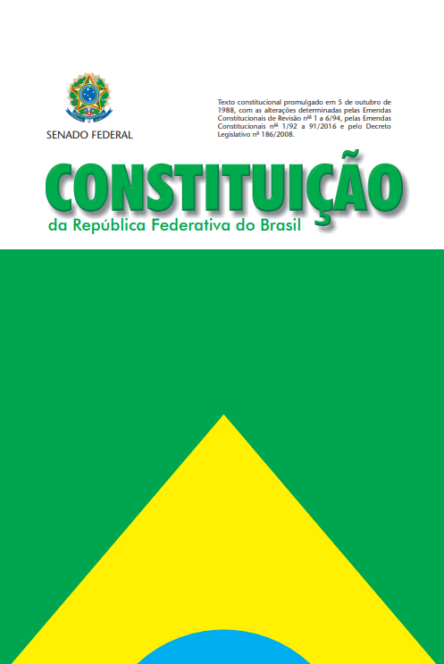

Associação Constitucionalizar
Biblioteca da Cidadania
Conhecimento é o primeiro passo da cidadania. Baixe gratuitamente.
Acervo gratuito
Livros para baixar

Constituição da República Federativa do Brasil
Texto constitucional promulgado em 5 de outubro de 1988, com as alterações determinadas pelas Emendas Constitucionais de Revisão nº 1 a 6/94, pelas Emendas Constitucionais nº 1/92 a 91/2016 e pelo Decreto Legislativo nº 186/2008.
Conhecer a Constituição é o primeiro passo para defender seus direitos. Este é o documento-base de toda a nossa luta pelo direito de ir e vir.
Quarto de Despejo: Diário de uma Favelada
Mais conhecido como Quarto de Despejo, é um livro autobiográfico da escritora Carolina Maria de Jesus. Um retrato contundente da desigualdade social no Brasil, escrito por quem viveu na pele a exclusão que a nossa Constituição promete combater.
Uma leitura essencial para entender por que a defesa dos direitos de todos — sem exceção — é a razão de existir da Constitucionalizar.
Conhecimento que vira ação
Por R$ 30,00 por mês você financia a luta pelos direitos que estes livros defendem.